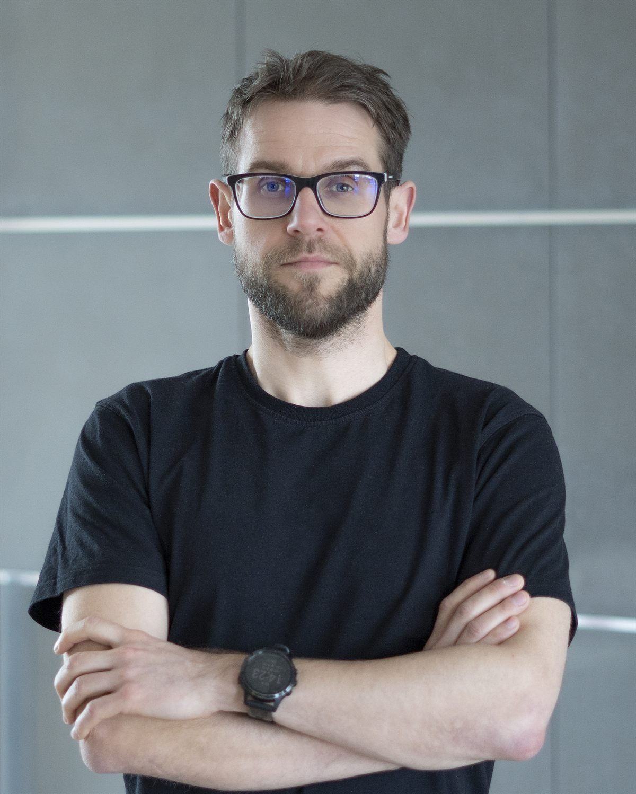
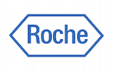
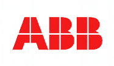
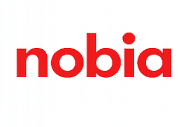
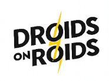

Turning business needs into IT solutions
Business analyst (IREB certified) & freelance consultant with over 10 years of experience, combining proven BA methodology with AI-powered tools to accelerate requirements discovery and analysis.
Helping organizations turn business goals into clear, actionable IT solutions.
I support corporations and software houses in delivering projects and products by clarifying business needs, aligning stakeholders, and ensuring that solutions achieve their intended business goals. My role is to bridge the gap between business and delivery teams, reduce project risk, and help organizations make informed decisions throughout the project lifecycle.

Add your photo here
(edit the src in the <img> tag)
A Business Analyst working as a freelance consultant, helping organizations deliver projects with clarity, structure, and a strong focus on business outcomes.
I support digital projects end to end, starting from the earliest pre-sales and sales phases, through discovery, and into full project setup and delivery. I increasingly leverage AI agents to speed up requirements elicitation, workshop synthesis, and documentation — freeing up time for what matters most: stakeholder alignment and critical thinking. My role is to help organizations clarify business goals, shape viable scopes, and translate complex needs into clear, actionable requirements.
During discovery phase, I lead workshops, define MVPs, and align stakeholders around a shared product vision and delivery approach.
Throughout the entire SDLC, I work closely with business and technical teams to ensure continuity, quality, and predictable outcomes from concept to production.
Across these contexts, I help align diverse stakeholder perspectives around clear goals, realistic scope, and effective delivery models.
I work with a wide range of organizations, from large enterprises and public institutions to scale-ups and technology-driven companies.
My clients operate across industries such as industrial manufacturing, healthcare and life sciences, finance, public sector, logistics, and software development.
I collaborate closely with senior business stakeholders, product owners, sales teams, domain experts, and delivery teams, supporting initiatives that range from early-stage concept validation to complex, large-scale digital programs.
What is your case
Discovery
I lead fully prepared and professionally moderated discovery workshops that turn fragmented inputs into a shared understanding of goals, scope, assumptions, and delivery risks. AI-assisted transcription and synthesis tools help me capture every insight and turn raw workshop input into structured findings faster.
Project setup
I establish a solid project foundation by defining clear scope boundaries, delivery structure, and ways of working, ensuring project starts with aligned expectations and a realistic delivery plan. AI-supported scenario checks help validate the assumptions and surface potential setup risks earlier in the process.
Business requirements
I ensure business needs are translated into clear, testable, and implementation-ready requirements that minimize rework and misunderstandings. AI agents help me accelerate first-draft requirement generation, full consistency checks, and gap analysis, while I carefully validate, refine, and own the final quality.
Backlog
I build and maintain a well-structured, prioritized backlog that supports efficient delivery, dependency management, and informed decision-making. AI agents help me analyze the backlog for duplicate items, missing acceptance criteria, and dependency risks, flagging up issues that could slow down actual delivery.
How I work
I follow a structured yet pragmatic approach that adapts to the context, maturity, and goals of each project while ensuring clarity, alignment, and predictable delivery.
Context and goals alignment
I start by understanding the business context, strategic objectives, constraints, and success criteria. I use AI tools to quickly synthesize background materials (existing docs, market research) before the first stakeholder conversation.
Example artifacts: business goals and success metrics, problem statement, product canvas, business environment, high-level scope outlineDiscovery and problem framing
I design, prepare, and moderate discovery workshops to explore user needs, business processes, actors, integrations, risks, and dependencies. AI agents support real-time note synthesis and help surface patterns, gaps, and follow-up questions across multiple workshop sessions.
Example artifacts: workshop agenda and materials, user journeys, high-level process flows, user story mapping, assumptions and risks list, initial MVP definitionScope shaping and project setup
Based on discovery outcomes, I help define scope boundaries, delivery approach, roles, and ways of working.
Example artifacts: scope definition, delivery approach overview, roles and responsibilities matrix, project tools and communication channelsBacklog building and prioritization
I build and continuously refine the product backlog, focusing on value, dependencies, and delivery readiness. AI-assisted analysis helps flag inconsistencies, missing acceptance criteria, and prioritization conflicts before they slow down delivery.
Example artifacts: prioritized product backlog, user story mapping, dependency mapping, refinement notes and decisionsBusiness analysis and requirements definition
I translate business and stakeholder needs into clear, structured, and testable requirements using appropriate techniques and artifacts. I combine established BA methods (BPMN, UML, user stories) with AI-powered drafting and validation, significantly reducing turnaround time without compromising precision.
Example artifacts: user stories with acceptance criteria, use cases, BPMN or UML diagrams, functional specificationsContinuous collaboration throughout delivery
Throughout the SDLC, I work closely with stakeholders and delivery teams, supporting refinement, clarifications, and decision-making until release.
Example artifacts: refinement outputs, sprint goals alignment notes, change impact analysis, decision logs and updated documentationProjects
Out of more than 20 projects I have worked on, here are some of the most interesting ones.




For whom
Organizations delivering complex digital products
For companies building or modernizing digital solutions that require clear requirements, stakeholder alignment, and structured delivery across multiple teams or systems.
Product and delivery leaders seeking clarity and control
For product owners, heads of delivery, and managers who need support in discovery, scope definition, backlog management, and decision-making to reduce risk and improve predictability.
Sales and pre-sales teams shaping new initiatives
For organizations that need strong analytical support in pre-sales, estimation, and early project framing to turn opportunities into well-defined, viable projects.
Contact
Ireneusz Zasadni - Business Analyst | Product Owner | Consultant IREB certified